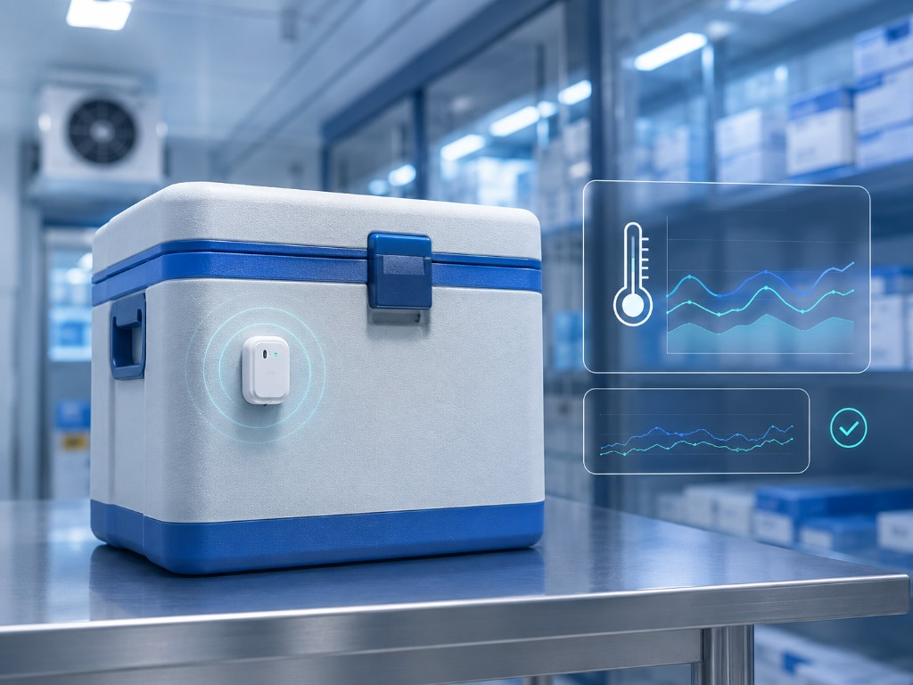
Temperature Monitoring
Track temperature-sensitive pharma and biological shipments to support range visibility during transport.
Live visibility & monitoring
Zoom Solutions provides live shipment visibility for pharma cold chain logistics, biological substances, clinical samples and healthcare cargo, helping teams monitor temperature, humidity, GPS location, light, shock and vibration until final delivery.
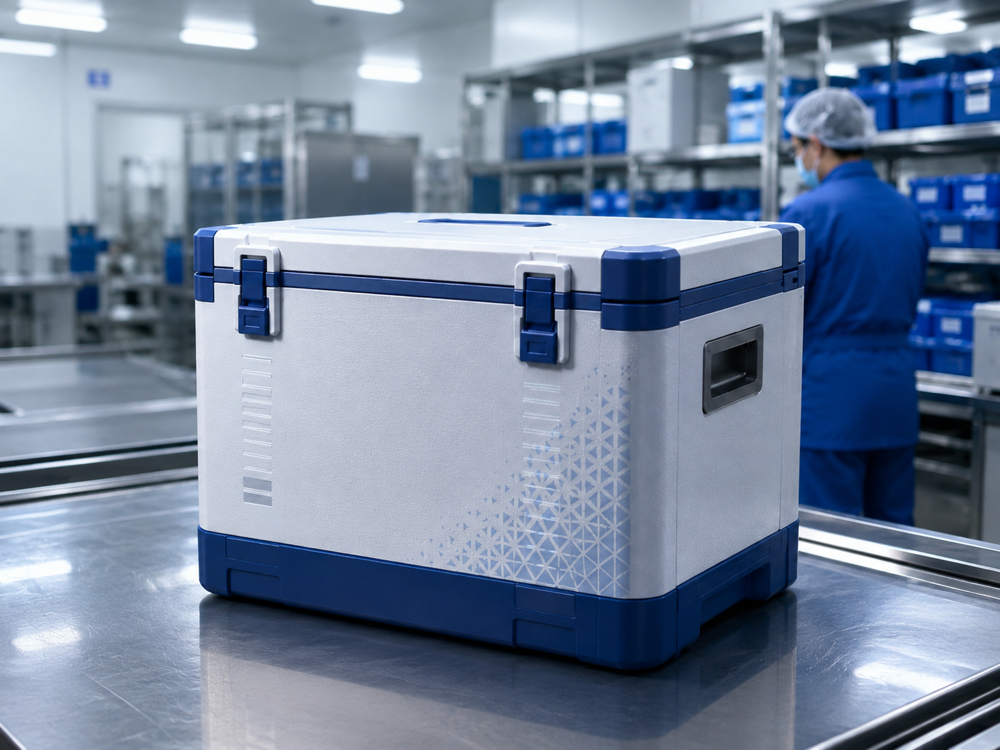
Shipment transparency
Temperature-sensitive healthcare logistics requires more than pickup and delivery. Pharma, biological and clinical shipments need condition visibility, route awareness and proactive communication throughout the movement.
Zoom Solutions supports live visibility and monitoring for cold chain shipments, giving customers better control over temperature, humidity, light exposure, shock, vibration and location data.
Monitoring helps reduce uncertainty, improve response time and support confidence during high-value healthcare logistics movements.
Monitoring capabilities
Depending on shipment requirements, monitoring can be configured around product sensitivity, route risk and customer visibility needs.

Track temperature-sensitive pharma and biological shipments to support range visibility during transport.
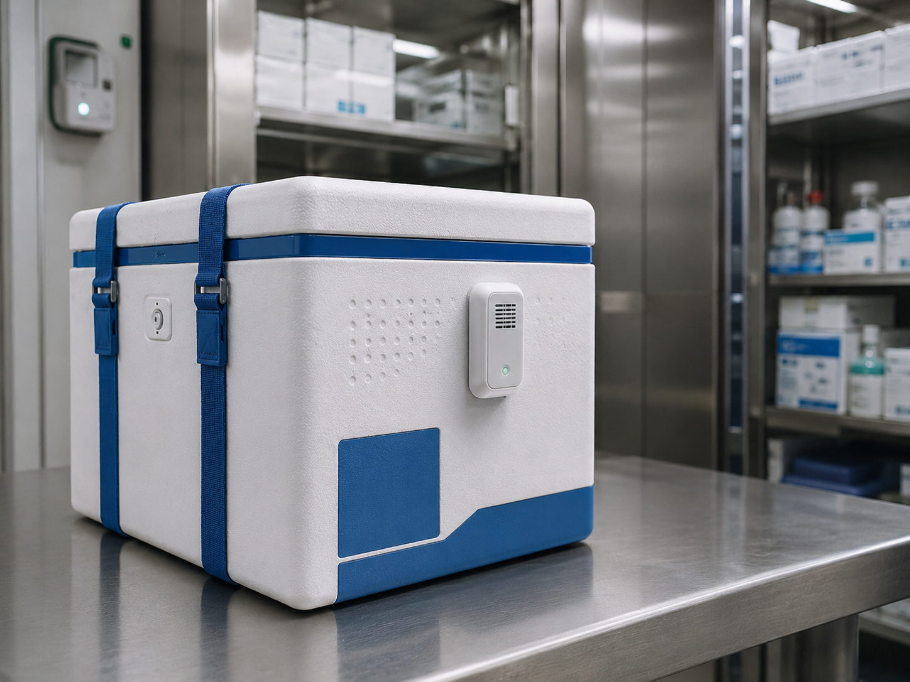
Monitor humidity conditions for shipments where moisture exposure may affect product quality.
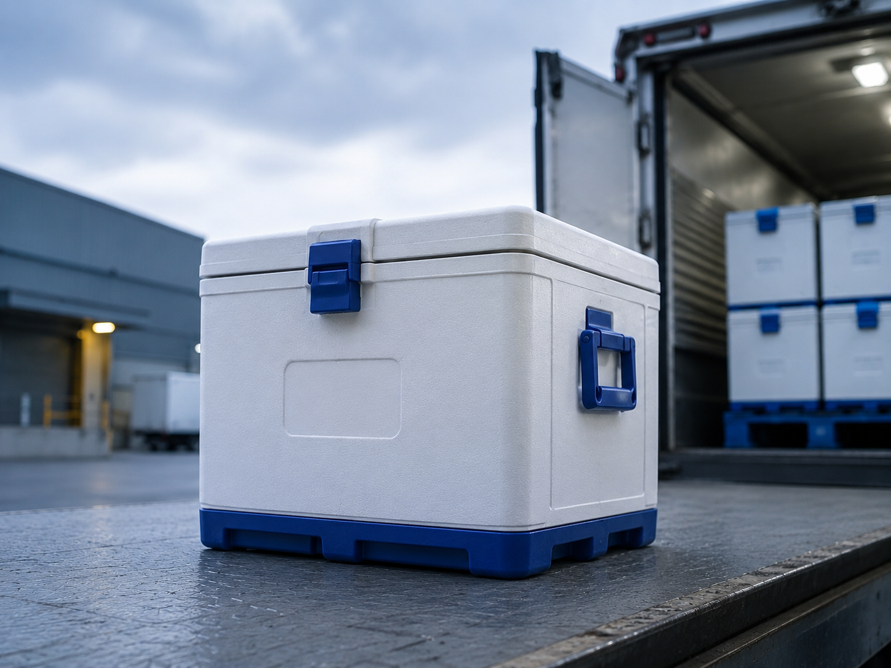
View shipment movement and route progress for better coordination and delivery planning.
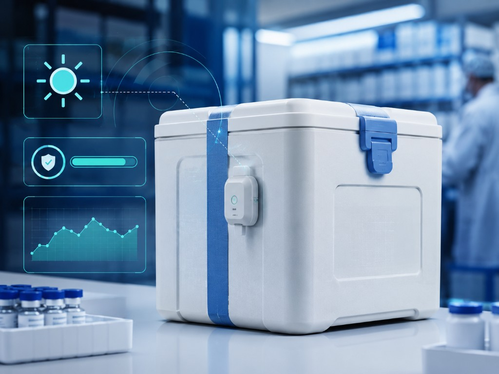
Identify possible package opening or light exposure events during sensitive cargo movement.
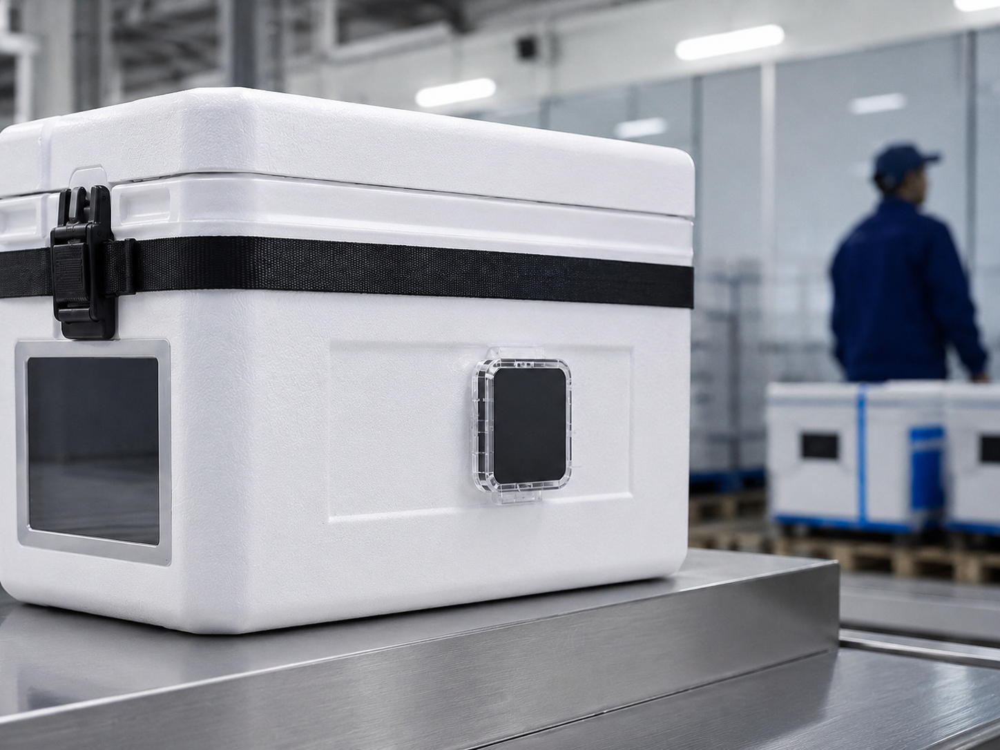
Detect handling impact events that may create risk for delicate healthcare and biological shipments.
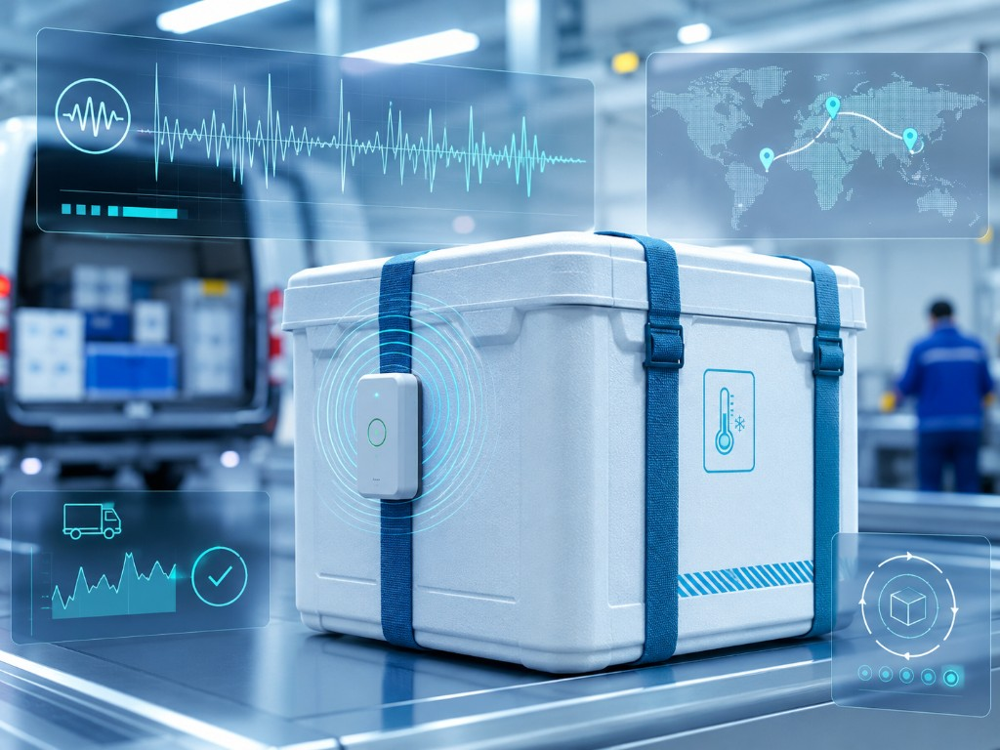
Monitor vibration-sensitive movements and support better visibility during complex routes.
Proactive response
Live visibility gives the logistics team and customer better information during critical movements. When a condition changes, the care team can review the shipment status and coordinate the next action.
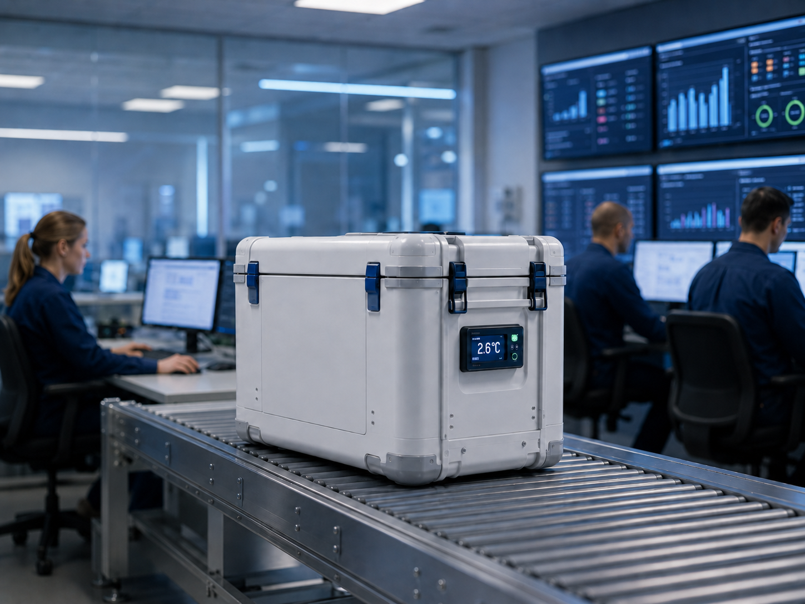
Live tracking dashboard
Visibility is especially important for healthcare products where a delay, temperature excursion or handling event can create product risk.
Monitoring supports shipment transparency for logistics managers, pharma teams, laboratories, hospitals and receivers who need timely updates.
View Cold Chain Logistics →Use cases
Temperature and location visibility for refrigerated and controlled room temperature pharma shipments.
Cold chain logistics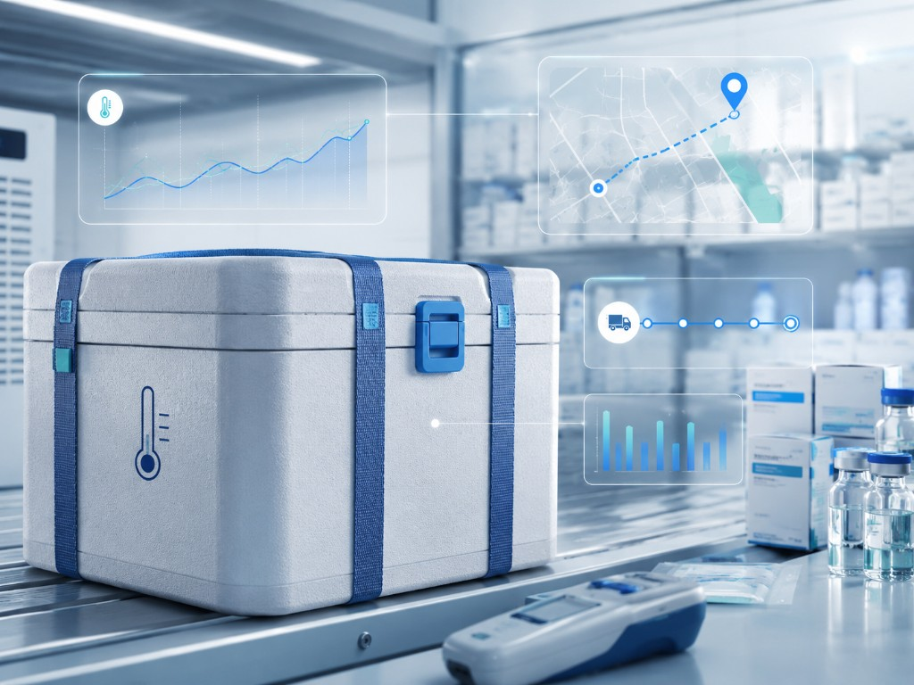
Visibility support for biological samples, clinical materials and cell and gene therapy shipments.
Biological handling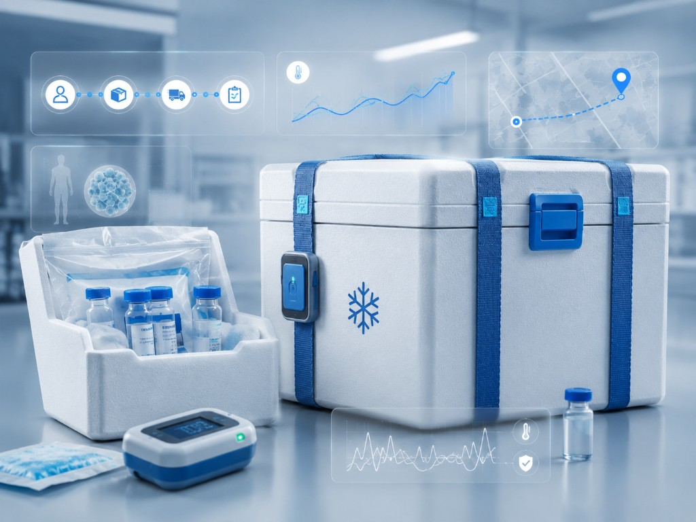
Monitoring support from pickup, quality check and packing through final handover.
Sample collection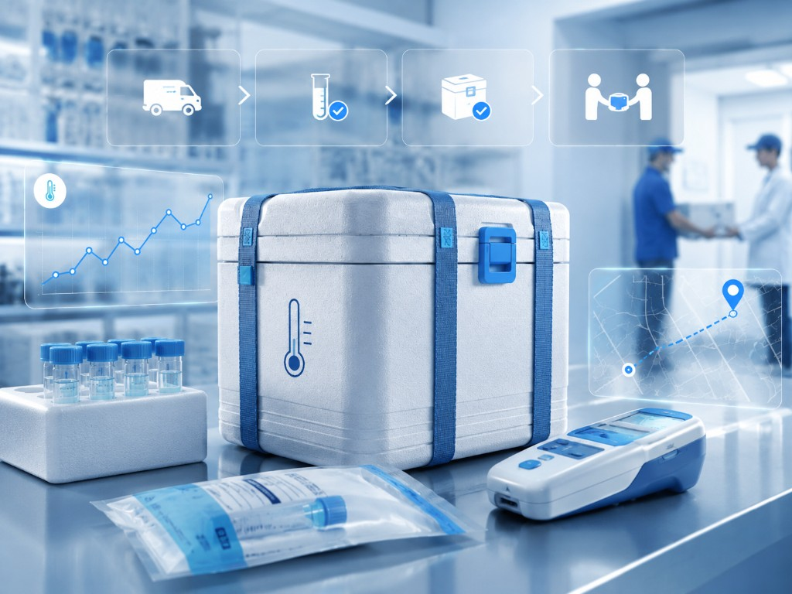
Monitoring can support shipments packed for 2–8°C, 2–25°C or route-specific requirements.
Packaging solutions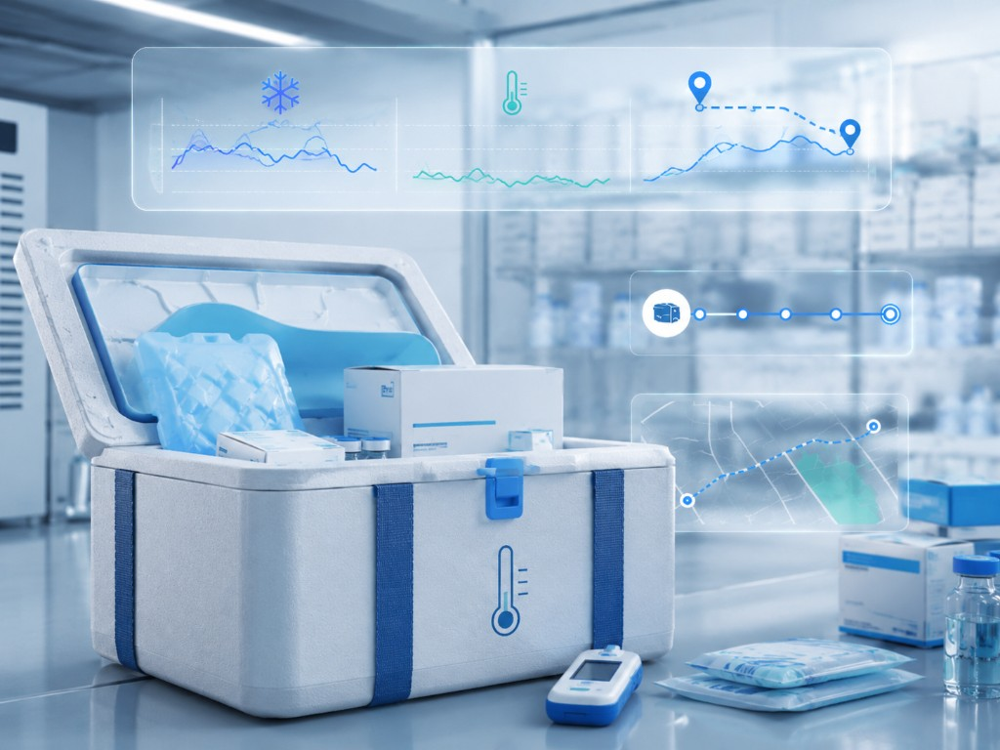
What you can monitor
Shipment monitoring helps identify risk, improve customer updates and support operational decision-making during sensitive healthcare movements.
Benefits
Monitoring gives teams better awareness of shipment conditions and route status.
Condition data helps teams react faster when a shipment needs attention.
Customers and receivers can be updated with more accurate shipment information.
Visibility supports better protection for high-value pharma and biological products.
FAQ
Clear answers for pharma, healthcare, laboratory and biotech teams planning monitored shipments.
Live visibility means shipment conditions and movement can be monitored during transit, helping logistics teams track temperature, location and other risk indicators.
Depending on the shipment setup, monitoring can include temperature, humidity, GPS location, light exposure, shock and vibration.
Yes. Monitoring can support biological substances, clinical samples, cell and gene therapy shipments and other sensitive healthcare cargo.
Not every shipment needs the same level of monitoring. The right setup depends on product sensitivity, temperature range, route, duration and customer requirements.
Request monitoring support
Share your origin, destination, product type, temperature range, route and delivery deadline. Our team can recommend the right monitoring setup for your shipment.